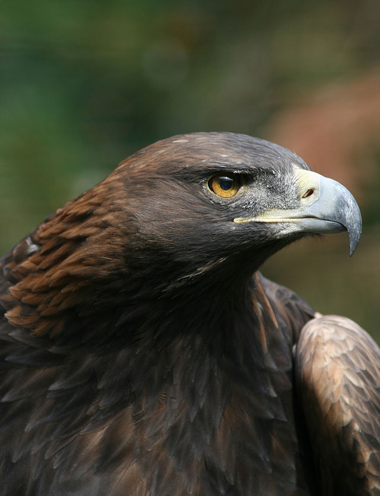

El Águila
El águila real ( Aquila chrysaetos) es una especie que alcanza hasta un metro de longitud total (de pico a cola), y su envergadura puede exceder los 2.20 metros; llega a pesar más de seis kilos y puede vivir más de 30 años.

El águila real es una de las grandes águilas con amplia distribución en Norte América y Eurasia. Se distingue por su pico robusto y ganchudo y por tener plumas en las patas hasta la mitad del tarso. Los adultos son café oscuro con vientre un poco claro en la base. La parte posterior del cuello tiene un tono dorado con matices rojizos. Los individuos jóvenes tienen el dorso de color café negruzco y vientre más claro. Su cola es blanca con una banda ancha oscura terminal.
Las hembras son mayores que los machos. En México el tamaño de las hembras es de 75 cm a 1 m. La envergadura de las alas alcanza hasta 2.30 m. y pesan entre 3.8 y 6.6 kg. Los machos son un poco menores de 80 a 87 cm de longitud, y 1.82 a 2.12 cm de envergadura y pesan entre 3.5 y 6 kg.
Distribución Potencial
Se han reconocido cinco subespecies en Europa, Asia, norte de África y Norteamérica. Se distribuía en gran parte de la república mexicana, principalmente en las Sierras Madres y altiplanicie mexicana, en aproximadamente el 50% del territorio nacional. Actualmente vive en Baja California, Sonora, Chihuahua, Coahuila, Nuevo León, Tamaulipas, Sinaloa, Durango, Jalisco, Aguascalientes, Zacatecas, San Luis Potosí, Guanajuato, Querétaro y Oaxaca. Se ha reportado en 19 Áreas Naturales Protegidas (ANP), incluyendo la recientemente propuesta ANP de Sierra Fría debido a la relevante presencia de sus nidos.
Hábitat
Vive en climas diversos desde los desérticos y subtropicales (BWh), semiáridos (BS), estepario tropical y subtropical (BSh) y climas fríos de alta montaña (EH). Vive desde el nivel del mar hasta los 3000 m. Su hábitat es variado e incluye zonas áridas, semiáridas y montañosas con bosques templados de pino-encino, coníferas, de encino y matorral espinoso.
Las regiones prioritarias para su conservación son las zonas remotas de la Sierra Madre Occidental; zonas áridas con densidad poblacional humana baja; algunas áreas naturales protegidas (Mapimí, Vizcaíno, Sierra San Pedro Mártir; zonas protegidas para la especie en Zacatecas). En marzo de 2008, se reunieron los representantes de 8 municipios de Zacatecas y Jalisco con la intención de definir estrategias de conservación del águila real bajo las iniciativas del Subcomité Técnico Consultivo para la Recuperación del Águila Real.
Algunos tipos de vegetación donde se desarrolla son: Bosque de coníferas, Bosque de coníferas y encinos, Matorral xerófilo.
Importancia cultural
El águila real ha sido utilizada como símbolo de valor y poder debido a su fuerza, tamaño e inaccesibilidad de sus nidos. En la mitología griega y romana se convirtió pronto en uno de los símbolos de Zeus/Júpiter, el rey de los dioses, y sustituyó rápidamente al quebrantahuesos como cabeza y garras del temible grifo. En la Antigua Roma pasó de ser un símbolo religioso a uno militar y político, como emblema del Imperio. En diversas épocas y por diversas culturas del mundo, particularmente las europeas, ha sido plasmada en heráldicas, escudos de armas y otros.
En México ha sido el símbolo del escudo nacional originado a partir de la fundación de Tenochtitlán. El último tlatoani azteca, hijo de Ahuízotl fue Cuauhtémoc "águila que desciende" (1495-1525). Algunas de las ofrendas del Templo Mayor en Tenochtitlán contienen restos de águila real. En Huichol se le denomina Weerika Wimari que significa águila madre, y en mixteco se conoce como Su.